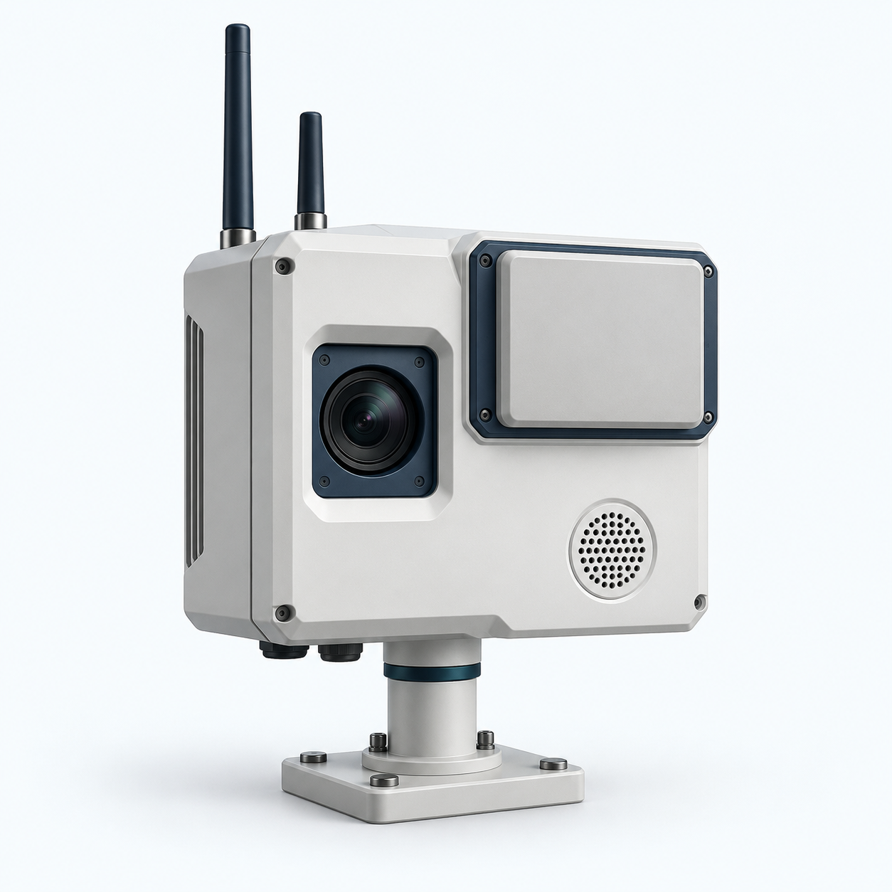

Detection
Assess the actual sensor and communications configuration against applicable spectrum, equipment, privacy and data-protection requirements.
Radio Equipment Directive ↗General Data Protection Regulation ↗
The physical starting point for airspace awareness.
A compact, site-mounted node brings four passive sensing inputs together. Its observations feed into DE ORB OS alongside those from other nodes.
The domes in the story represent sensing coverage. Connected nodes combine their observations across the site.
See the nodes across a siteA passive detection layer for the places we depend on.
DE ORB is developing a network that brings drone activity into view, helping people make informed decisions about civilian airspace.
Explore the protection layers Detection at the core. Authority at every response.Distributed nodes gather complementary evidence. The passive sensing concept uses signals already present in the environment.
Passive describes the sensing layer. Site communications and any optional transmitting hardware require their own assessment.
DE ORB OS combines sensor inputs to detect, classify and maintain a track. The purpose is to give operators usable evidence, including uncertainty.
An observed drone is not automatically a threat. Sensor evidence and the operating context inform the next decision.
The operator reviews the track against site procedures and coordinates with the competent authorities.
Where lawful and approved, DE ORB's track information could support an integrated partner response. The authorised operator retains the decision.
Notify the competent authority, continue monitoring and apply the site's protective procedures. A physical intervention is not a prerequisite for useful detection.
Subject to the site's approved procedures.Potential integration categories, not claims of deployed DE ORB effectors. Lasers and microwaves are directed energy; they are not kinetic effects.
The ambition is to support deployment under applicable EU and national requirements. This illustration does not establish certification or permission to engage.
Assess the actual sensor and communications configuration against applicable spectrum, equipment, privacy and data-protection requirements.
Radio Equipment Directive ↗General Data Protection Regulation ↗Use clear responsibilities, evidence review and coordination with the relevant authority. EU policy supports preparedness, detection and coordinated responses.
European Commission · February 2026 ↗Countermeasure powers depend on national law and the authorised actor. A European policy framework is not a blanket permission for private operators to use effectors.
EU communication on drone threats ↗